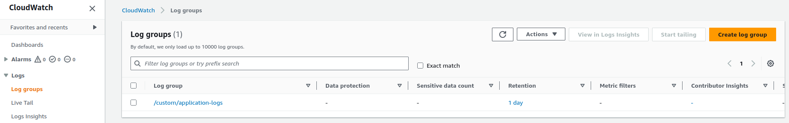
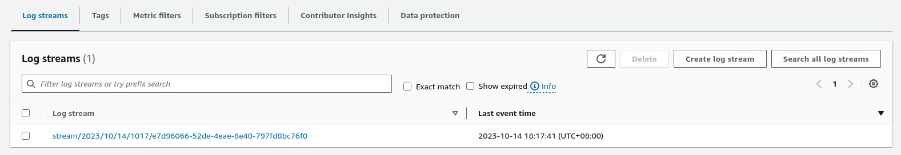
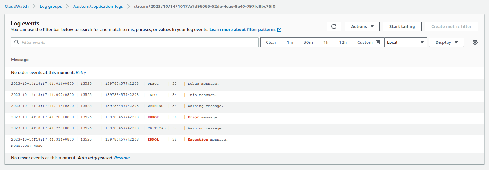

Python Logging Part 2: AWS CloudWatch Logs Handler
Incorporating AWS CloudWatch Logs into Python applications via a custom logging handler is a practical approach for robust log management and monitoring. This article will walk you through the straightforward process of setting up and integrating CloudWatch Logs, providing a clear path for developers to enhance their application's log tracking and analysis capabilities.
Changelog
- 2023-10-27
- minor formatting
- 2023-10-15
- minor formatting
- 2023-10-14
- initially published
Prerequisites
Before proceeding with the next sections, you must ensure that you have:
- An active AWS Account
- A working installation of AWS CLI v2
- Configured AWS credentials (see instructions)
Handler
To integrate AWS CloudWatch Logs in Python using boto3 and subclassing the Handler class of the standard logging module, you can create a custom CloudWatch Logs handler. Here's a step-by-step guide:
Step 1: Install the necessary libraries if you haven't already:
Step 2: Create a custom CloudWatch Logs handler by subclassing the logging.Handler class. Override the emit method to send log messages to CloudWatch Logs:
Tip
The snippet below is annotated to explain blocks of code inline.
| aws_cloudwatch_logs_handler.py | |
|---|---|
1 2 3 4 5 6 7 8 9 10 11 12 13 14 15 16 17 18 19 20 21 22 23 24 25 26 27 28 29 30 31 32 33 34 35 36 37 38 39 40 41 42 43 44 45 46 47 48 49 50 51 52 53 54 55 56 57 58 59 60 61 62 63 64 65 66 67 68 69 70 71 72 73 74 75 76 77 78 79 80 81 82 83 84 85 86 87 88 89 90 91 92 93 94 95 96 97 98 99 100 101 102 103 104 105 106 107 108 109 110 111 112 113 114 115 116 117 118 119 120 121 122 123 124 125 126 127 128 129 130 131 132 133 134 135 136 137 138 139 140 141 142 143 144 145 146 147 148 149 150 151 152 153 154 155 156 157 158 159 160 161 | |
- Return
clientbased on provided profile. - Return
clientbased on AWS credentials set in config file. - Return
clientbased on AWS credentials set in config file and custom region. - Return
clientbased on manually entered AWS credentials. - Find the sequence token in the log streams.
- If no sequence token is found, then create the stream.
- On
ResourceNotFoundException, create the log group. - On
ResourceAlreadyExistsException, ignore. - Store the next sequence token.
- Get the current Unix time in milliseconds (required by AWS).
- Format the message using the configured
Formatter. - Ignore
DataAlreadyAcceptedExceptionand get next sequence token. - If the current sequence token is invalid, change the sequence token and retry.
- Wait and try resending.
Usage
After creating our custom Handler, we can use it the same way we use other built-in logging handlers in Python's logging module:
After running our custom handler:
We can now check CloudWatch Logs in our AWS console and we should see our sample log messages:

/custom/application-logs
stream/YYYY/MM/DD/hhmm/UUID4
Use Cases
The implementation of CloudWatch Logs in Python using boto3 and a custom CloudWatch Logs handler can be used in various scenarios and use cases. Here's a list of possible use cases for this implementation:
- Application Logging: Centralized logging for your Python applications to monitor their behavior, troubleshoot issues, and track application performance.
- Distributed Systems: In distributed systems, you can aggregate logs from different components and services into a single CloudWatch Logs log group for centralized monitoring.
- Error Tracking: Use CloudWatch Logs to capture and track application errors, exceptions, and stack traces, making it easier to identify and resolve issues.
- Security and Compliance: Store security-related logs and audit trails in CloudWatch Logs to help meet compliance requirements and monitor suspicious activities.
- Application Performance Monitoring (APM): Correlate logs with performance data to gain insights into application performance and pinpoint bottlenecks.
Conclusion
In conclusion, harnessing the power of AWS CloudWatch Logs in Python by leveraging a custom CloudWatch Logs Handler subclass of Python's logging module offers developers a robust and flexible solution for centralized log management. This implementation empowers Python applications to seamlessly transmit log data to CloudWatch Logs, allowing for real-time monitoring, comprehensive troubleshooting, and a wealth of potential use cases. Whether tracking application performance, debugging issues, or ensuring compliance and security, the integration of CloudWatch Logs through a custom handler equips developers with the essential tools to take control of their log data and optimize their AWS environment.